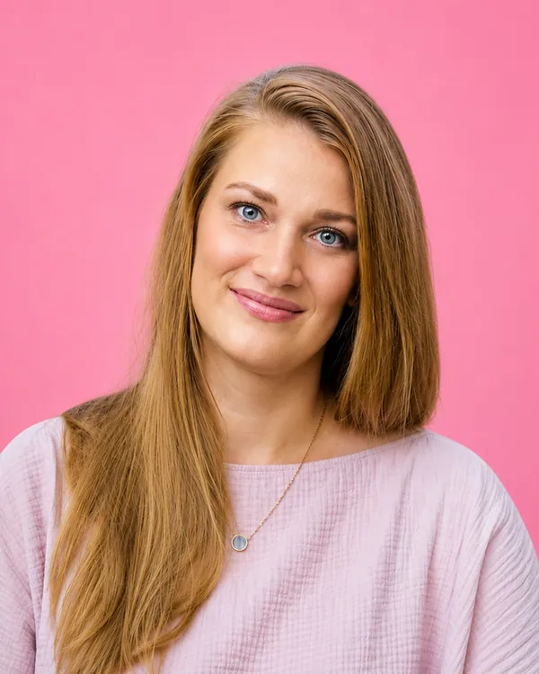

Pavlína Knířová
Učitelka biologie a tělesné výchovy
Ve svém profesním životě se věnuji vzdělávání a výchově dětí na základní škole. Po letech života v krajském městě jsem se rozhodla vrátit domů, do podhůří Jeseníků. Nebyla to jen změna adresy, ale vědomé rozhodnutí žít a pracovat v regionu, odkud pocházím a ke kterému mám silný vztah. Odmala mě formoval sport. Závodně jsem se věnovala plavání a basketbalu a naučila se, že za úspěchem stojí vytrvalost, poctivá práce a schopnost táhnout za jeden provaz. Stejné principy podle mě platí i při rozvoji města. Chci lépe propojit město, školy a sportovní kluby. Naše děti potřebují kvalitní vzdělání, moderní sportoviště a dostatek možností pro smysluplný volný čas. Šumperk má jedinečné kouzlo a mnoho nevyužitého potenciálu. Chci pomoci vytvářet podmínky, aby mladí nemuseli za každou příležitostí odcházet jinam.